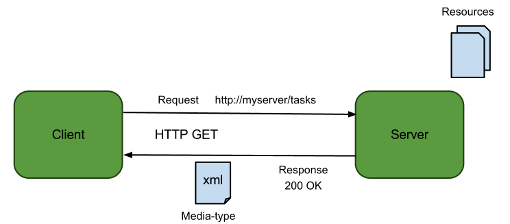

Rafael Reis: formado em Ciência da Computação pela PUC Minas e trabalhando com desenvolvimento web e aplicativos móveis desde a web 1.0.
Contato: orafaelreis@gmail.com

Application Programming Interface
É um conjunto de rotinas, protocolos e ferramentas para a construção de aplicações ou interação com sistemas externos.
Uma API é como um contrato, ela especifica como os componentes de software devem interagir.
Ex.: Java API, Google Maps API

Em meados de 2014 a Marvel revelou uma API para que a comunidade pudesse acessar, extrair dados e criar aplicações usando seus personagens favoritos. Nesta disciplina iremos explorar isso e aprender alguns conceitos que cercam o consumo de APIs.
Construir uma API sobre as grandes personalidades do nosso país, como Machado de Assis, Santos Dumont, Carmen Miranda, etc.
Entidades e atributos que podem estar presentes na API: